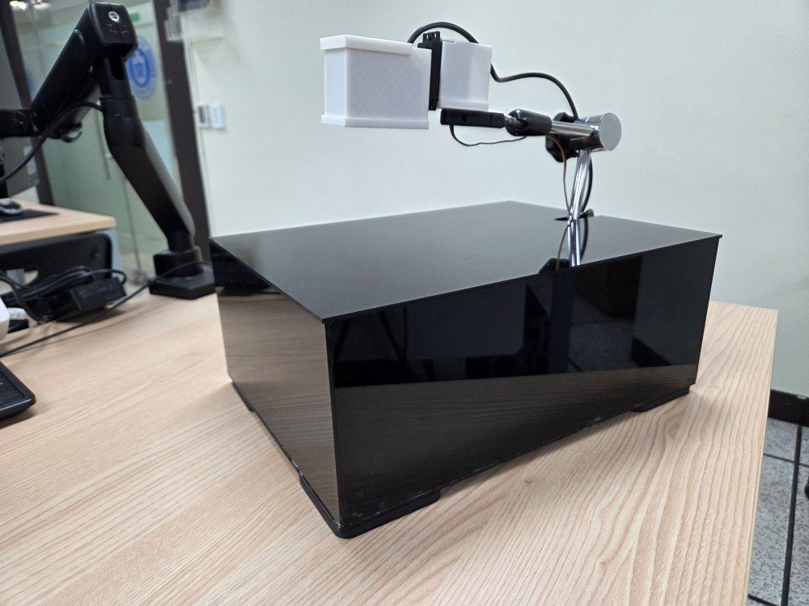
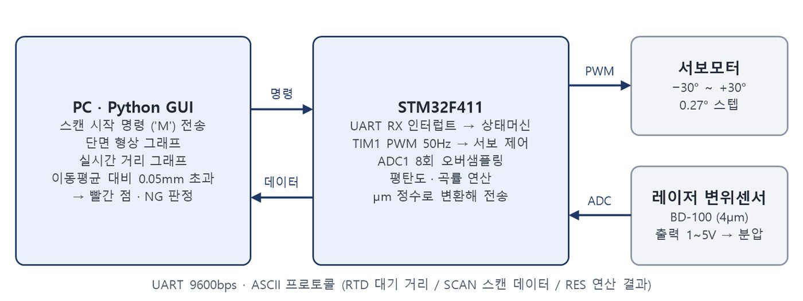
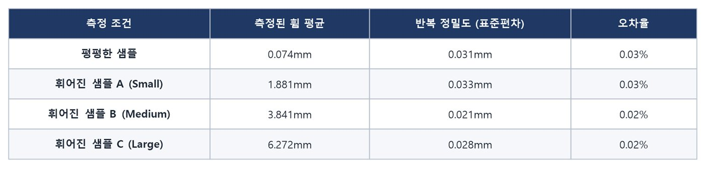

01 · 산학프로젝트 (㈜천진)
레이저 변위센서 기반 비접촉 곡률 측정 시스템
레이저 변위센서를 서보모터로 −30° ~ +30° 원호 스캔해 기판의 휨(Bow) · 곡률을 비접촉으로 측정합니다.


반복 정밀도0.03mm목표 0.1mm
ADC 분해능 (이론)4.75μm13.43μm에서 개선
성과발표회대상2025 반도체 역량강화
구조 · 문제 해결 자세히 보기
구조와 설계 의도
- STM32는 서보 · ADC · 연산, PC는 시각화 · 판정으로 역할 분리
- IDLE → HOMING → RUNNING → CALC 논블로킹 상태머신 (HAL_GetTick 기반)
- 모든 값을 μm 정수로 보내는 ASCII 프로토콜 — float printf 없이 동작
- 0.27° 간격 223점 연속 스캔, 이동평균 대비 0.05mm 초과 지점을 빨간 점으로 표시
문제 센서 출력(1~5V)을 ADC(0~3.3V)에 맞추며 ADC 한 단계가 13.43μm — 센서(4μm)보다 ADC가 병목
조치 측정 지점마다 ADC를 8회 읽어 평균하는 오버샘플링
결과 이론 분해능 4.75μm, 반복 정밀도 0.03mm

